第 2 轮：表情包设置页
整页按这版的样子做？
推荐同意：表情画成模切贴纸（沿外形一圈白边、一道浅影），选中时那圈边换成强调色，跟着贴纸的形状走；网格按常用、其他分组，替代第 1 轮的星标；左栏、属性栏照 Profile 页的写法，不加框。
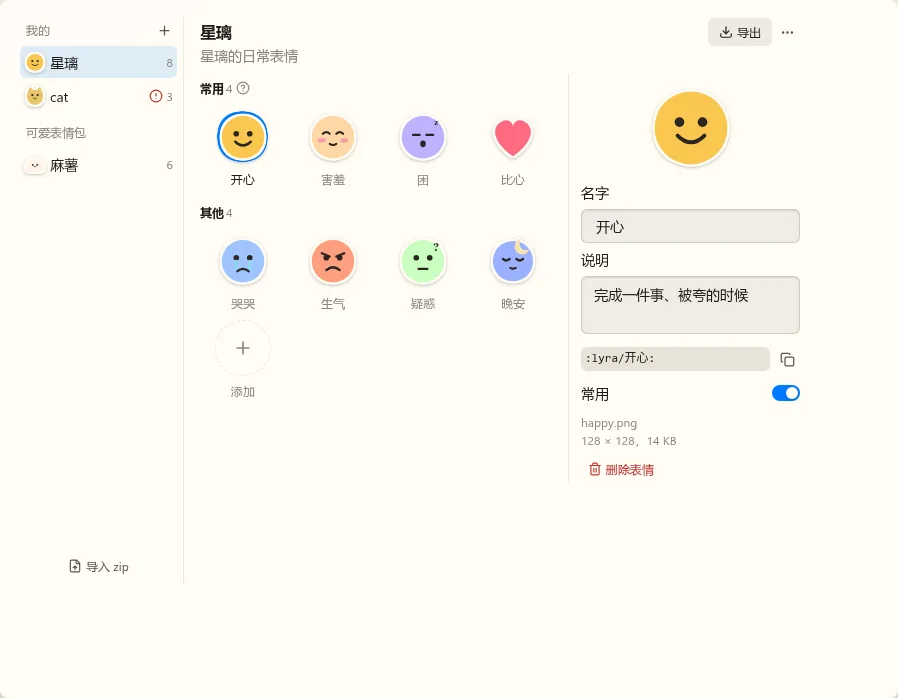
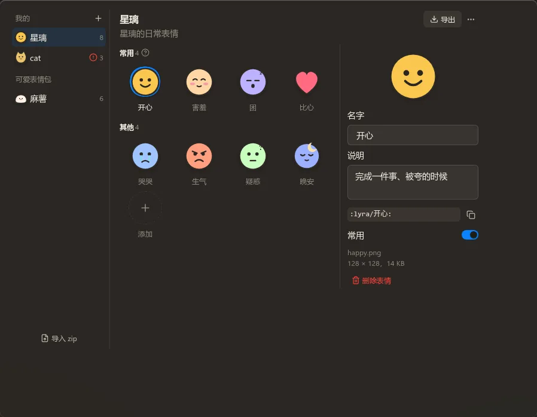
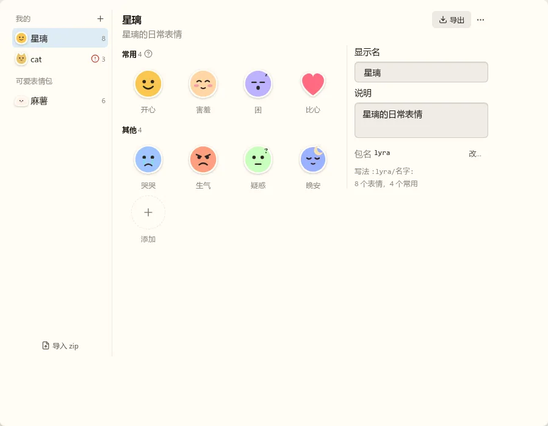
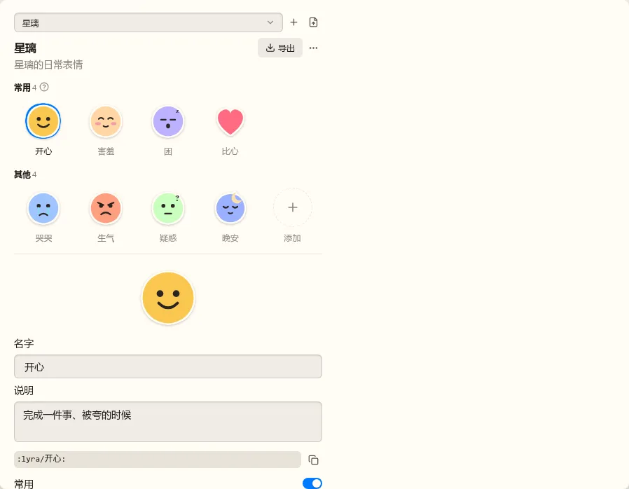
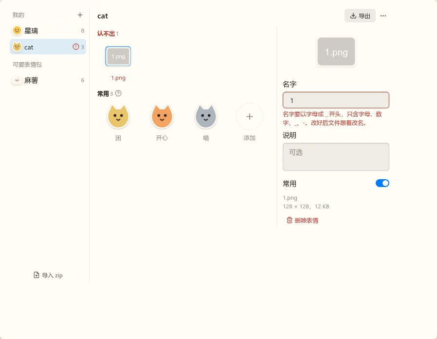
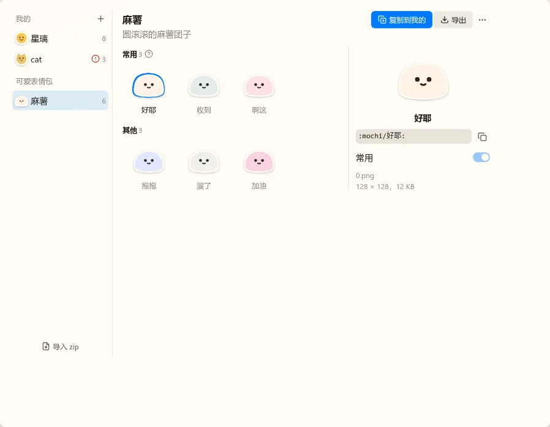
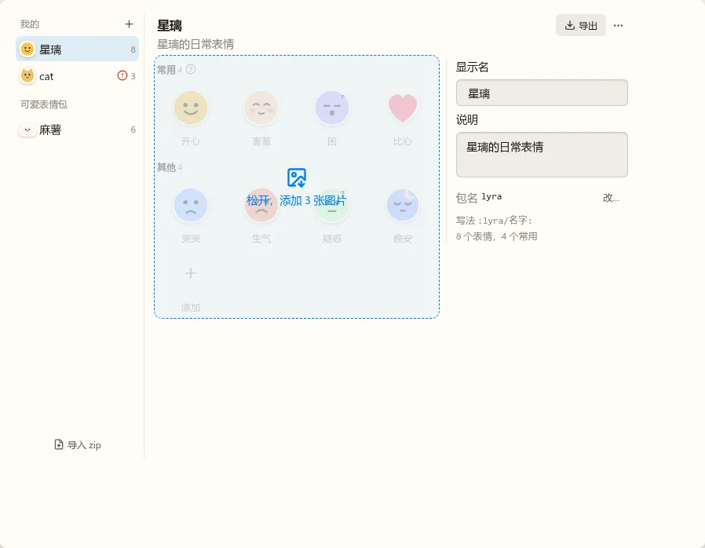
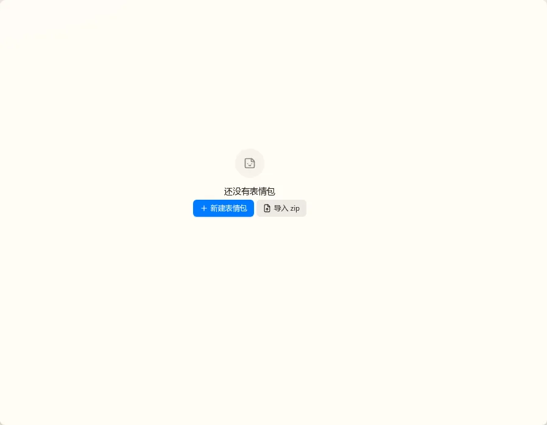
没加进清单的图放在网格最后一组，可以一键全部加进来？
推荐同意：你选了“只认清单”，在文件管理器里放进去的图不会自己变成表情；放在这一组，看得见、点一下就加。它们不进左栏的表情数。
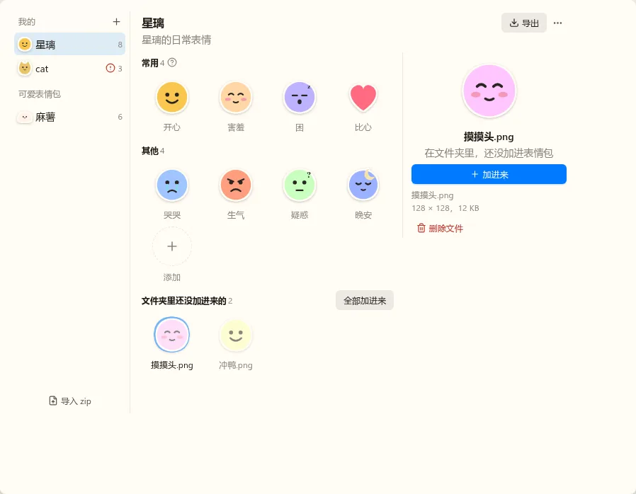
改包名这样告诉代价？
推荐同意：入口在头部“更多”菜单与属性栏包名旁的“改…”；对话框里用警示条写清旧写法会认不出、改回就恢复，按钮写明改成什么。
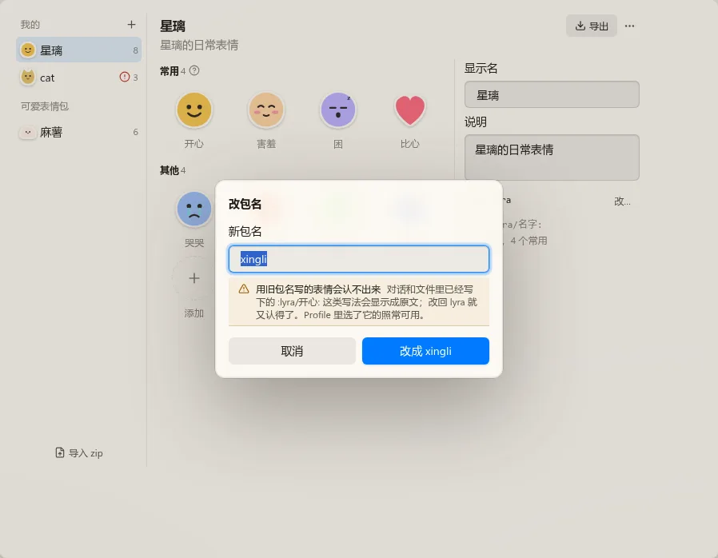
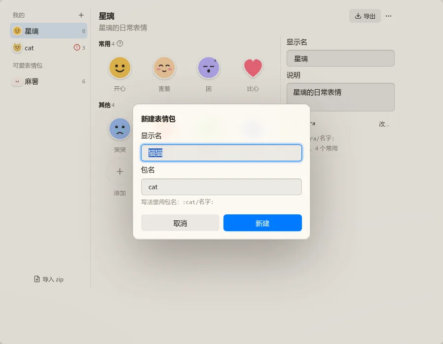
导入同名的对话框按这版？
推荐同意：两边各一排贴纸预览加名字与个数，取消靠左，另存与替换靠右，替换用危险色。
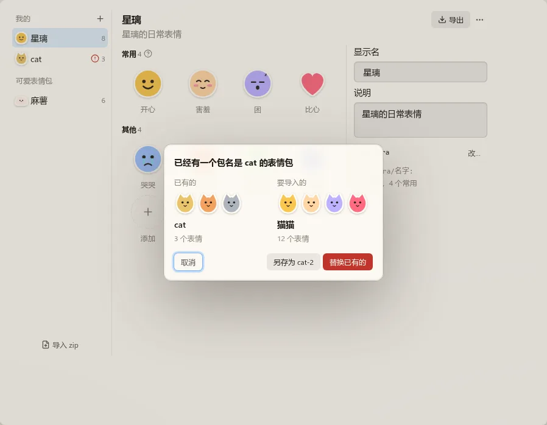
已定
- 左列表右详情，同 Profile 页；选中表情后在旁边的属性栏改（会话里定）
- 超过 1024 像素或 2 MiB 的静态图自动缩小，超限的动图拒绝（会话里定）
- 导入同名时问替换还是另存为新包（会话里定）
- 有清单之后只认清单里的表情（第 1 轮）
- 包名可以改，改之前告诉代价（第 1 轮）
- 认不出的图标出来、选中直接改名；插件的包只读、复制到我的（第 1 轮）
- 第 1 轮的样子不通过：“样式有点丑”（第 1 轮）